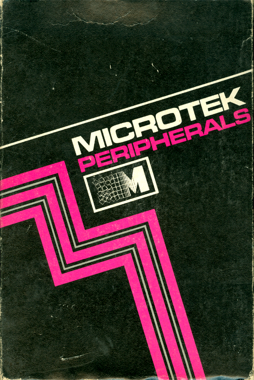
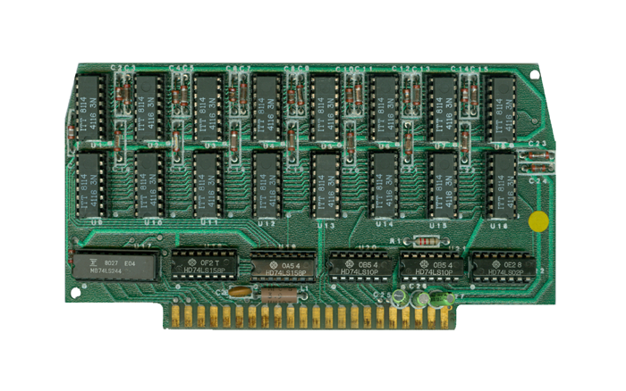
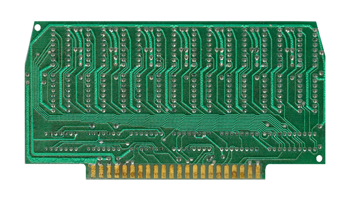

|


|

Microtek AMB32 - Box

Microtek AMB-32 - Front

Microtek AMB-32 - Back
| The Microtek AMB-32 is a 32k
Memory board for the Atari 800 and can reside is
Slots 1 through 3 in the system. It was
specifically advertised as a way of having 48k in
only 2 slots leaving the 3rd open for other board
options. The single sheet
instructions outline its purpose, usage, covers
returns & warranty.
CLICK HERE
|
Content to
be added, updated 3/10/2019 |